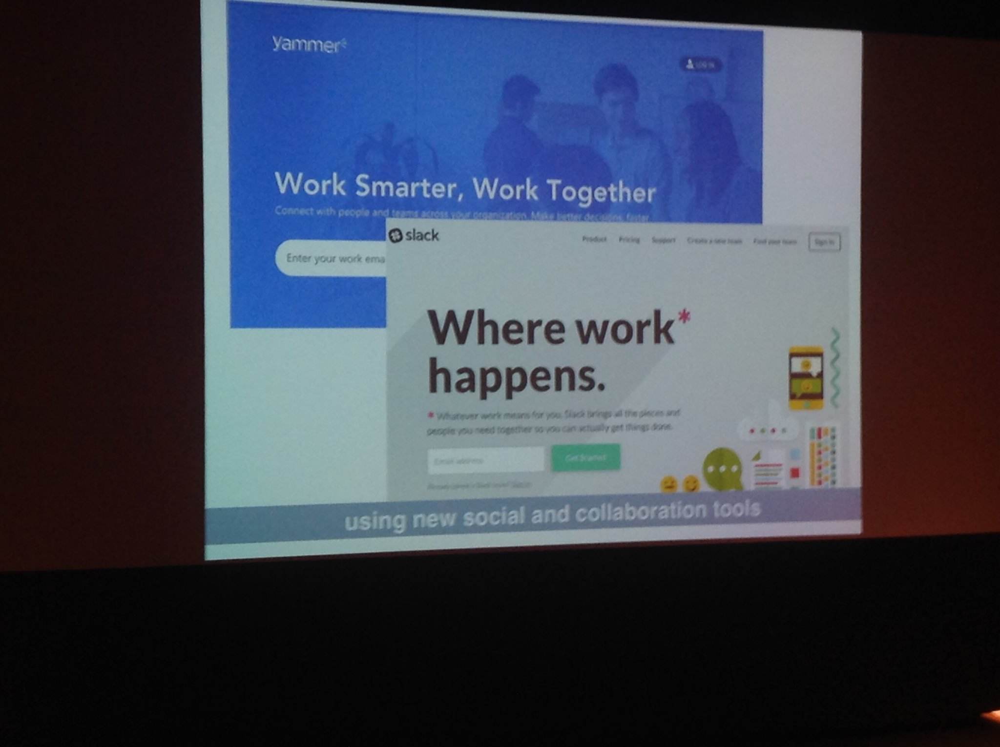
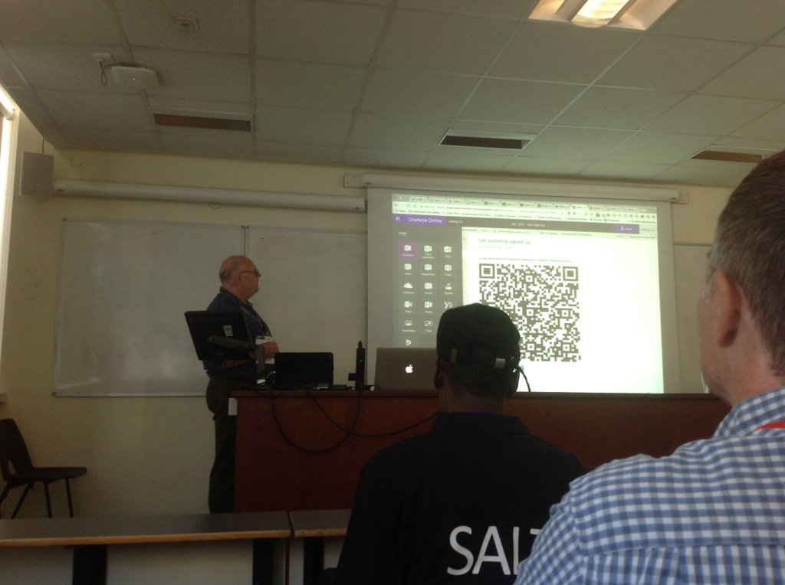

- The 9th Annual SALT Learning and Teaching Conference took place on the 5th July 2017 at the Taliesin Arts Centre, Singleton Campus, Swansea. The Conference was open to all colleagues at Swansea University.
- Reaching for Teaching Excellence #SUSALT17 conf. 5/7/17 @TaliesinSwansea 9 to 5 Visit https://goo.gl/Y11LLB for more details & to register
- At next week's SALT conference #SUSALT17 there are also sessions on critical thinking. Fine out more https://saltconference2017.wordpress.com/programme/ https://twitter.com/EvidentlySian/status/878384885936902145
- Yay ... finally uploaded all abstracts for #SUSALT17 https://saltconference2017.wordpress.com Here is a flavour of keywords from a range of over 50 sessions! pic.twitter.com/jwxIb7RjhI
- What sessions will YOU be going to next Wednesday's SALT conference? #SUSALT17 https://twitter.com/debbaff/status/879703096624128000
- I'm going to "#SUSALT17 SALT Conference". See you there? https://www.eventbrite.com/e/susalt17-salt-conference-tickets-32498656356?aff=estw
- Can't attend next week's conference? Follow #SUSALT17 & don't forget conf website for details of what your missing https://saltconference2017.wordpress.com/
- Can't attend next week's conference? Follow #SUSALT17 & don't forget conf website for details of what your missing https://saltconference2017.wordpress.com/
- We are really looking forward to the SALT Conference on Wednesday 5/7/17 #susalt17 We have a great keynote lined up and some fab sessions .. pic.twitter.com/P0XMhCSJNZ
- We are really looking forward to hearing from @cathgroves in her session about Critical Reflection #SUSALT17 https://goo.gl/BXNpTG pic.twitter.com/XgjIF8vRuo
- The session from @hodges_hr on Using Kipling to Teach Research Methods looks fab #susalt17 ! https://goo.gl/K98ERP pic.twitter.com/RDcOTAsMyG
- Hey @susaltteam We are getting the kit ready for the Hololec workshops tomorrow! #SUSALT17 pic.twitter.com/fXy19rXyoZ
- Excellent! Can't wait to see it in action! #susalt17 https://twitter.com/is_this_really/status/882251641914896391
- See some excellent talks #susalt17 https://twitter.com/susaltteam/status/881905381164728320
- Interested in finding out more about OneNote ? check out @cpjobling 's presentation tomorrow Faraday C #susalt17 https://saltconference2017.wordpress.com/2017/06/26/onenote-classroom-notebook-your-new-vle/ pic.twitter.com/bHftu3fr57
- Whoo hoo !Looking forward to the Augmented Reality Session tomorrow with @is_this_really #susalt17 https://saltconference2017.wordpress.com/2017/06/26/hololec-augmented-reality-in-teaching/ pic.twitter.com/TW9f47hAfQ
- Ready for a Virtual Reality session tomorrow with @DrMarcHolmes ? We've seen the preview and its fab ... #susalt17 https://saltconference2017.wordpress.com/2017/06/26/how-virtual-reality-can-enhance-real-life-learning-and-teaching/ pic.twitter.com/9I9sg1ZH0m
- A fabulous poster about posters @LLWSwansea... participate in the lunch time poster session tomorrow #susalt17 https://saltconference2017.wordpress.com/2017/06/23/a-poster-about-posters-evaluating-the-use-of-a-conference-style-poster-as-a-form-of-assessment/ pic.twitter.com/VcvKG8yMx2
- Sessions at tomorrow's #SUSALT17 SALT conference include "sabre tooth tigers" and "snackification". Who's the snack? https://saltconference2017.wordpress.com/programme/
- 'Official' storify might take a couple of days so hoping @cpjobling might work his magic inbetween presenting /session chairing ?#susalt17 pic.twitter.com/0rv6ELksob
- We'll also have Helen on the pens for the Annual Excellence in #Learning and #Teaching Conference #SUSALT17 https://goo.gl/Y11LLB pic.twitter.com/hcDZo1Bngb
- Today's lightning talks at SALT conference include empowering, engaging & equipping students. More info https://saltconference2017.wordpress.com/programme/ #SUSALT17
- Today's the day of the #susalt17 conference. Looking forward to hearing @SwanseaUni staff talk about teaching excellence
- Explore how our research facilities enhance student learning with @sciencetell #SUSALT17 http://bit.ly/2tKCFJd pic.twitter.com/7XLWuTSado
- We are hoping to live stream our keynote talks - the link will live and available here from 9am #susalt17 http://bit.ly/2sgj8fA
- Great team, great organisation #SUSalt17 pic.twitter.com/ry4sOanmFH
- Looking forward for today's Salt annual conference #susalt17 pic.twitter.com/MRigjDqGYy
- Interested in finding out more? Come along to Faraday G at 10:45 today #SUSALT17 @Swansea_Law @PGRSwansea pic.twitter.com/DdEO8TeQXR
- @SwanseaUni SALT conference is go! Great programme - so much in one day #SUSALT17 pic.twitter.com/8N9KQXrSry
- Lots going on today on campus including the SALT conference 2017 #SUSALT17 #swanseauni @susaltteam https://twitter.com/sultec4/status/882515341766791168
- Almost a full house in Taliesin at the start of #SUSALT17 @HumanandHealth @SwanseaUni pic.twitter.com/rrrsMX2dvF
- Looking forward to seeing what's on the graphic wall by the end of #SUSALT17 pic.twitter.com/Hb5NFWllec
- What's 'snackfication'? @RhianMeara Will be explaining more in Faraday H at 10:45 #SUSALT17
- Graphic recording: interesting approach - others used with great success! #SUSALT17 pic.twitter.com/USa5vQ2Og4
- Trying out innovation at #susalt17. Graphical recording pic.twitter.com/aJbyXDzBnp
- Jane Hart @C4LPT kicks off the #SUSALT17 @SwanseaUni on #workplace #learning. Looking forward to this! pic.twitter.com/JVJcsHL6ZF
- Jane Hart @C4LPT talks about how modern professionals are learning today @susaltteam #SUSALT17 @SwanseaUni pic.twitter.com/qfyMmyVyxO
- Great to see Helen from our team capturing the action! #SUSALT17 https://twitter.com/yamnette/status/882516555153776644
- Want to win a slot in our @SUEngineering #lightboard recording studio? Come to our workshop 14.30 Fulton 1 #SUSALT17 pic.twitter.com/PoQEWUIwd1
- Key learning tools with @C4LPT YouTube top of list 2017 #SUSALT17 @SwanseaUni pic.twitter.com/T34IMjXeRM
- What online communities do we use to discuss the development of educational technology @susaltteam #susalt17 pic.twitter.com/Rmd27leTxS
- Helen starting on the keynote visualisation @ #SUSALT17 pic.twitter.com/Iyos9uaI77
- Suggestions of what tool modern professional learners are using #susalt17 pic.twitter.com/nt2FibFdAF
- Love the art going on at #susalt17 Great idea! https://twitter.com/cpjobling/status/882523312622063621
- The changing nature of the workplace and @C4LPTargues we need to future proof our workforce. What does this mean for #HE? #SUSALT17 pic.twitter.com/aRjjVJImlehttps://t.co/aRjjVJImlepic.twitter.com/aRjjVJImle
- @C4LPThas produced some modern professional guidelines and how HE can help. #SUSALT17 pic.twitter.com/O3RYyot7nx
- #SUSALT17 Keynote themes reminded me of this from UCISA. pic.twitter.com/w34DwydehO
- Guideline 2 is to spend some time reflecting on daily work. Taking next step beyond learning logs to expand to continuous learning #SUSALT17 pic.twitter.com/I8ulzxkfJl
- Relevant take home messages at #SUSALT17 pic.twitter.com/cCUUt1sbRg
- The need to develop our students into modern professional learners in a new digitized environment? #SUSALT17 @SwanseaUni @HumanandHealth pic.twitter.com/xmbXnG58Ww
- Come and talk to your subject librarians about the classes we run on developing better searching skills #SUSALT17 https://twitter.com/RogersVivienne/status/882527389313576960
- Listening to the live stream #SUSALT17 Reaching for Teaching Excellence @susaltteam @SwanseaUni https://videostream.swan.ac.uk/view2.aspx?e=SALT2017
- Reflecting as soon as possible after the event is important. Develop a system that works for you. See http://salt.swan.ac.uk/CPD #SUSALT17 https://twitter.com/sciencetell/status/882527331985870849
- We have Yammer at @SwanseaUni. Connect at http://yammer.com and login with Uni email and PW. #susalt17
- Leading on to guideline 8 about building and maintaining your personal network. Having a valuable network is what gets you jobs. #SUSALT17 pic.twitter.com/66Ge5qVJ6L
- Guideline 9 is managing your own professional development. To demonstrate #learnability and #curiosity @C4LPT #SUSALT17 pic.twitter.com/YYqeToPokI
- @VictoriaLovett Sorry you cant be here. Some really interesting presentations lined up. I'm sure there will be some blog posts floating around #susalt17
- Here's a well-argued counterpoint to Clay Shirky's (in)famous talk about 'filter failure' http://www.nathanzeldes.com/blog/2010/05/yes-it-is-information-overload-clay-shirky-not-only-filter-failure/ #SUSALT17
- Final guideline is perhaps the most important by establishing your own personal toolkit. #SUSALT17 pic.twitter.com/j6C0rCFOpC
- Some of my best learning has been from observing, being observed, or just having a brief conversation over coffee, "how did you?" #SUSALT17 https://twitter.com/RogersVivienne/status/882528128983334912
- We can teach and already teach these skills to students. Please come talk to you librarians #susalt17 https://twitter.com/rscsam/status/882531074995302400
- Flexibility, autonomy, mastery, purpose #susalt17 pic.twitter.com/4OI0Qc8SOm
- Don't forget the Poster Sessions Fulton House Refectory at 1.30pm today ...also online here https://padlet.com/Debbaff/SUSALT17POSTERS #SUSALT17
- Personally, I think 'yes'.. A useful future debate? #susalt17 https://twitter.com/rogersvivienne/status/882532102486544384
- @RogersVivienne @JennyDStanford @C4LPT Bad place to teach students WPskills, but great place for them to LEARN them in a supportive environment #SUSALT17
- Learning about http://trypingo.com with Kristian Evans at #susalt17
- @hodges_hr discusses applying her practice based knowledge to establishing good research questions #SUSALT17
- #SUSALT17 @hodges_hr presents a robust but gamefied way of strengthening research questions development among her 2nd year students pic.twitter.com/2xeXXdOCcN
- #SUSALT17 ...learning by participating in the activity brings greater insight. Have to adapt to lower numbers than expected @hodges_hr
- Awesome to see so many people immersed in VR at once. Looking forward to hearing their feedback on our anatomy app. #SUSALT17 pic.twitter.com/pzVehhog6N
- #SUSALT17 this approach can be used elsewhere and in other disciplines and many agree! @hodges_hr pic.twitter.com/mDjTtPAEqp
- #SUSALT17 could be used for PhD students too to explore their research questions at an early stage to help @hodges_hr
- Using Kipling to teach research methods thanks @hodges_hr #SUSALT17 https://twitter.com/LJ_Rees/status/882540274580430848
- Sue Evans, accounting & finance, research in how to better prepare students for final exams #susalt17 pic.twitter.com/PjzpGqg02L
- #SUSALT17 putting research question differently, incl mind map tools etc.g. Mind view can help many visualise their research @hodges_hr
- How students revise in SoM looks familiar to me #SUSALT17 pic.twitter.com/6aD1UBDHyK
- Creating a revision zone to move students away from rote learning techniques, Sue Evans #susalt17 pic.twitter.com/1S8KMGGkU9
- Now hearing @AnaLindaS talking about virtual communities of practice in medicine. An interesting concept, worth following up #SUSALT17
- #SUSALT17 @SU_MACS_MADATP playfulness can be an individual personality trait, reflect you dispositions, creativity..use in HE?
- #SUSALT17 supporting effective learning by a playful approach in our teaching @SU_MACS_MADATP
- @SU_MACS_MADATP suggests #playfulness and be used in #HE and illustrates with #researchmethods but need safe environment #SUSALT17 pic.twitter.com/mnWXTsPORk
- #SUSALT17 to be effective, the teacher needs a particular disposition, with feeling safe to try it out. @SU_MACS_MADATP
- Really enjoyed @MelanieHealy3 presentation - particular co-production and partnership element #SUSALT17
- #SUSALT17 @SU_MACS_MADATP presents research findings on the degree of enjoyment and helpfulness depending on if task was playful or not. pic.twitter.com/OUhyiKb2JC
- #SUSALT17 what advice can @SU_MACS_MADATP give to teachers who are anxious about being playful?....
- #SUSALT17.. .@SU_MACS_MADATP says set up the relaxed environment early in the discussions..but put yourself out of your comfort zone.
- @cpjobling Seats at the front #SUSALT17
- #SUSALT17 @SU_MACS_MADATP start with a non academic topic to build student buy in, not worried about knowledge differences between them
- #SUSALT17 @hodges_hr uses catchphrase type approach to describing graphical output....@SU_MACS_MADATP
- #SUSALT17 @SU_MACS_MADATP some great discussion about engaging students in playful manner, but importance of ensuring robust research links.
- A fun and interesting presentation by @RhianMeara on the snackification of learning #SUSALT17 pic.twitter.com/ebvYKpxl12
- Love this @RhianMeara use of cake as a teaching tool #SUSALT17
- @RhianMeara explains #geographical #maps through cake! #SUSALT17 @SUGeography pic.twitter.com/df04rSmg5X
- @SusanneDarra talks about developing a community of practice in developing new BSc program #Susalt17 @SwanseaUni pic.twitter.com/LAqYMYhlIw
- An earlier data point for the snackification of education: doughnut rounds. http://www.tandfonline.com/doi/abs/10.3109/01421599709019380 #SUSALT17 @RhianMeara
- @susaltteam Looking forward to hearing our @eng_lang_tefl @SUMediaComm and @PCS_Swansea lecturers speak at #SUSALT17
- .@SianRees4 looks at how employability/entrepreneurship can improve teaching excellence, Faraday D, 12:30 #SUSALT17 https://saltconference2017.wordpress.com/2017/06/26/how-can-focusing-on-employability-and-entrepreneurship-improve-teaching-excellence-in-my-subject-area-exploring-an-ontology-of-employability-best-practice-in-higher-education-institutions/ https://twitter.com/Apply_Swansea_C/status/882549576632324097
- #SUSALT17 15 minutes flew by, thanks for allowing me to talk about playfulness pic.twitter.com/dfaBGHgUoK
- Interesting talks from our @SwanseaUni_LTI lecturers at #SUSALT17 today.
- Really super VR Session - Dr Marc Holmes @SUEngineering. Look out for new VR anatomy sessions CHHS! @HumanandHealth #SUSALT17 @SwanseaUni pic.twitter.com/dp6VLtt1YWhttps://t.co/dp6VLtt1YWpic.twitter.com/dp6VLtt1YW
- Really superb VR session with Marc Holmes #SUSALT17. Look out for awesome new VR anatomy sessions at CHHS! @HumanandHealth @SwanseaUni pic.twitter.com/f6hw8i2QHDhttps://t.co/f6hw8i2QHDpic.twitter.com/f6hw8i2QHD
- Really superb VR session with Marc Holmes #SUSALT17. Look out for awesome new VR anatomy sessions at CHHS! https://twitter.com/i/web/status/882557942075207682
- And the sunshine and happiness continues .... #SUSALT17 pic.twitter.com/TF5r9NeQMY
- Presenting at the SALT conference this morning about using snacks as teaching tools! #SUSALT17 https://twitter.com/sharon_harvey2/status/882546255972491264
- Using cake as a tool for understanding 3D geological maps and structures at the #SUSALT17 conference this morning! https://twitter.com/RogersVivienne/status/882547480365236224
- Enjoying the #SUSALT17 conference @swanseageog @SwanseaUni today with @hodges_hr https://twitter.com/debbaff/status/882559985124814848
- #SUSALT17 Karin Ennser is about to talk about using remote labs to contextualise L&T pic.twitter.com/NBNizMxOk6
- Using OneNote in the classroom - @cpjobling showing us useful apps inc Class Notebook #SUSALT17 pic.twitter.com/izlVADW5ih
- @cpjobling introduces #onenote and #classnotebook as an alternative #vle #SUSALT17 pic.twitter.com/KdlltasFje
- Go to http://office.com & enter Swansea uni email to sign in...can then access apps inc Class Notebook and more #SUSALT17 @cpjobling
- #SUSALT17 remote lab option offers great learning environment for modelling mathematical result of engineering problems. pic.twitter.com/55Aa1Ff8oq
- .@RogersVivienne presenting at the @SwanseaUni #susalt17 conference about giving audio feedback on Turnitin! pic.twitter.com/lperNpYLl4
- Looking forward to to see this piece of info graphic come together #susalt17 pic.twitter.com/7w902k6voZ
- Trends in critical reflection & associated constructs, Catherine Groves #susalt17 pic.twitter.com/uz0QymSfbw
- Great graphic recording of my keynote at #SUSALT17 this morning by Helen from http://eleanorbeer.com pic.twitter.com/kg5kEcM0yH
- Great #susalt17 keynote thanks @C4LPT and @susaltteam https://twitter.com/C4LPT/status/882569891060088832
- Great #susalt17 keynote thanks @C4LPT and @susaltteam https://twitter.com/C4LPT/status/882569891060088832
- Great presentation on audio feedback using turnitin #susalt17 good reflection @RogersVivienne pic.twitter.com/N4HvOsFzl5
- Here's the fuller version of what @GibbonSimon has just presented https://salt.swan.ac.uk/can-we-define-the-characteristics-of-a-good-teacher/ #SUSALT17
- Lots of conversations at #susalt17 already. Live and interactive here: http://hawksey.info/tagsexplorer/?key=1yXLUyZtNCEdSqJ3Fdy5ICJrwMXjSxnvWNvgaZQ6nIpk&gid=400689247&retweets=true&mentions=true
- Paul Holland (not on Twitter ;-) and @RhianMariKerton are presenting flipped blended learning at #SUSALT17 pic.twitter.com/6zDuSGth2Q
- Mario van der Ruhr on developing #CriticalThinking in #HE #SUSALT17 starting with the need for grammar and punctuation for logic training pic.twitter.com/8cgA9V1ZfX
- Winch and Wells' 1995 paper on the quality of student writing (needs JSTOR login) http://www.jstor.org/stable/pdf/3121758.pdf #SUSALT17
- Flipped, authentic and quick to mark labs - win win! Great to see @SUEngineering sharing good practice #SUSALT17 pic.twitter.com/Ks5KZTwSRJ
- This will be my favourite tweet of the conference! #susalt17 Thank you @cpjobling https://twitter.com/cpjobling/status/882531558208438273
- Helen was AMAZING doing this - lovely to see it evolving...totally jealous of her skill in producing this! #SUSALT17 https://twitter.com/C4LPT/status/882569891060088832
- Loved hearing @RogersVivienne talk about audio feedback: reflective & entertaining sharing of experience = what #susalt17 all about!
- @sarahanntait shares implications of feedback on summarise assessments @SwanseaUni #Susalt17 pic.twitter.com/GitCpBhp4o
- An earlier-presented case for... um... physics, I think. I probably need to hone my critical thinking skills. #SUSALT17 pic.twitter.com/CNVZkc1Pyn
- @nadavies87 discussing the use of Hackathons as a problem-based learning approach #SUSALT17 @SwanseaMedicine pic.twitter.com/6oQrwhF4JE
- @JodieCrox feeling proud with Dee Thyer at #SUSALT17 poster session @HumanandHealth @SwanseaMedicine @SwanseaUniSEA pic.twitter.com/sXEyrmYtpB
- @ScienceSheWrote discussing the use of video content in teaching and learning @SwanseaMedicine #SUSALT17 pic.twitter.com/CRslGi3Ctf
- So many ways to engage students with technology. Think I'd better up my game! #SUSALT17 pic.twitter.com/CSsTisyzhh
- A wonderfully inspiring session with @DrSeanWalton @SUEngineering on Augmented Reality! #SUSALT17 @SwanseaUni @HumanandHealth pic.twitter.com/hvMlSYe6gkhttps://t.co/hvMlSYe6gkpic.twitter.com/hvMlSYe6gkhttps://t.co/hvMlSYe6gkpic.twitter.com/hvMlSYe6gk
- @is_this_really @DrSeanWalton packing up after fab sessions on the Hololec. @drmichlee equates the presenters to Dick & Dom? #SUSALT17 pic.twitter.com/NOUTCvhmh4
- @MelanieHealy3 talking about a feeder stream for Doctors in Wales #SUSALT17 @SwanseaMedicine pic.twitter.com/MBh0Lf3E1j
- The first Hololec workshops are complete! Myself and @DrSeanWalton are chuffed with the event and thanks to those who attended! #SUSALT17 https://twitter.com/susaltteam/status/882608775642918917
- #SUSALT17 Prof Stringer ready for the keynote at a fab day! Thanks to all presenters and delegates pic.twitter.com/DP0dcJNGOO
- @GibbonSimon I couldn't be at #susalt17 but we would love to see your presentation slides. Please can you DM us best email address for you?
- #SUSALT17 Prof Stringer recognising the ELTA and ESSAs pic.twitter.com/7si801VpQ6
- #Susalt17 school of management salt lead wins ELTA. Congrats pic.twitter.com/p4kktKq2NP
- Jonathan Hinkin from CHHS wins an ELTA #Susalt17 pic.twitter.com/TA0GrjNzSi
- Jan Gosling, an asset to Swansea wins an ELTA #SUSALT17 pic.twitter.com/gdxr9fq8cn
- Congrats to all lTA and ESSA award winners at #susalt17 pic.twitter.com/Wkes7AnTdc
- Great to see this Emma so deserved #susalt17 pic.twitter.com/8StxBSCoAt
- @susaltteam great #susalt17 guys! Lots to reflect on ... Looking forward to #susalt18 pic.twitter.com/Yd3EK0ADCL
- Thanks for your contributions all round Chris to today. #susalt17. Catch Chris' abstract on the conference website: https://saltconference2017.wordpress.com https://twitter.com/cpjobling/status/882635296038412288
- For those who couldn't make my #susalt17 talk here is a Sway I'm making: "OneNote Class Notebook - your next VLE?" https://sway.com/szqxSDT1Bq6H6EHf?ref=Twitter
- some very exciting new teaching opportunities with the VR and AR kit displayed at #SUSALT17 https://twitter.com/ScienceSheWrote/status/882663135454351360
- Read my Jul 6 Newsletter featuring SALT Conference 2017 (#susalt17) (with images, tweets) cpjobling http://nzzl.us/hRrDQl0
- Whoop, congrats to our very own Clive Weston for an Excellence in Learning and Teaching Award! @SwanseaMedicine #SUSALT17 https://twitter.com/susaltteam/status/882866423877554176
- In case you didn't have the chance to come to #SUSALT17 here is our presentation https://www.slideshare.net/sarixbarrento/getting-students-hands-wet via @SlideShare
- OneNote Class Notebook Your New VLE? #SUSALT17 SALT Conference. Add @SkoolerUK for additional T&L functionality https://saltconference2017.wordpress.com/2017/06/26/onenote-classroom-notebook-your-new-vle/amp/
- Also yesterday. Tom Hewes, @drstephbest Steph Best and Sophie Cunningham from CHHS were recognised though ELTAs. #SUSALT17 Well done all!
- And the final ELTA winner.... Trilby James from the College of Law and Criminology.#SUSALT17 pic.twitter.com/2jebjw01ZZ
- Read my Jul 6 Newsletter featuring SALT Conference 2017 (#susalt17) (with images, tweets) cpjobling http://nzzl.us/hRrDQl0
- And the final ELTA winner.... Trilby James from the College of Law and Criminology.#SUSALT17 pic.twitter.com/kzM5weMDU1